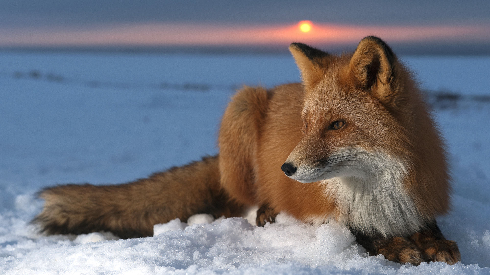
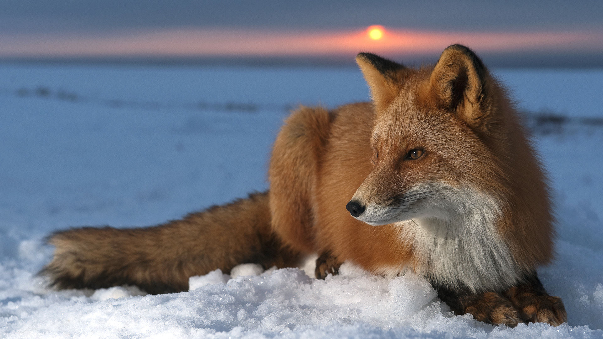
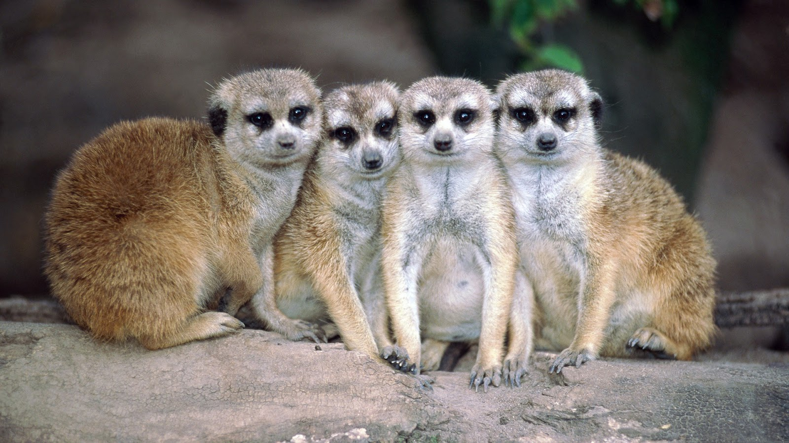
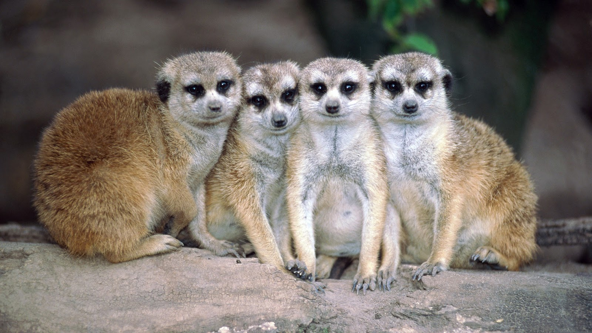
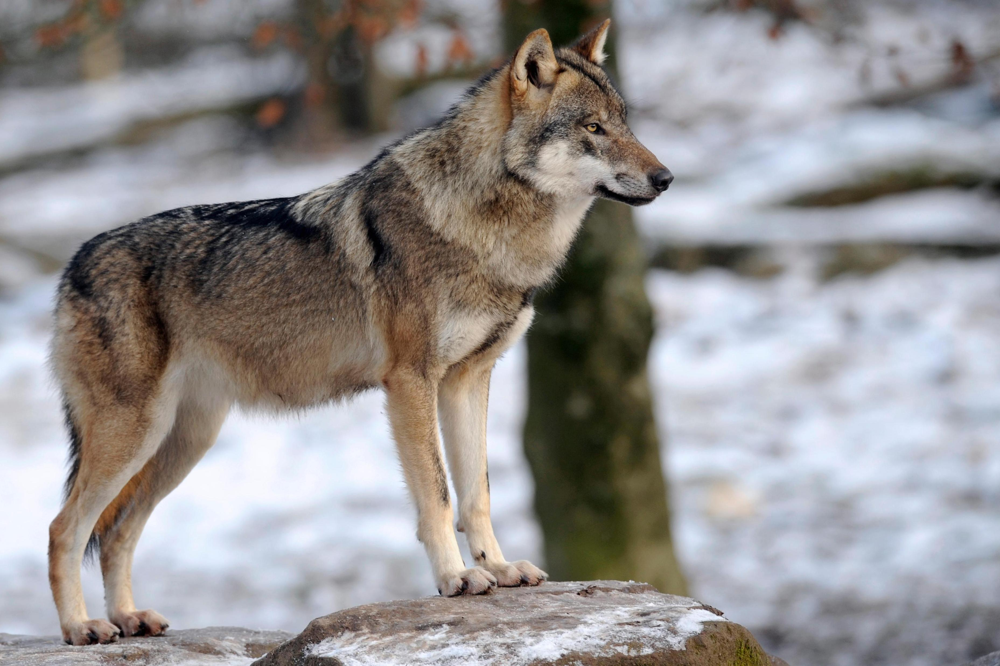
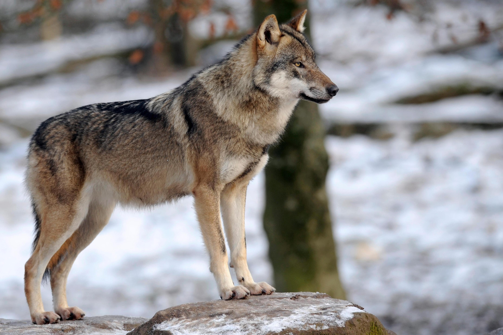

Time between each slide:
two seconds (default):
five seconds:
ten seconds:
thrity seconds:
loop through the photos (default):
stop at the last photo:

 

 

 

Tick to toggle slideshow:
two seconds (default):
five seconds:
ten seconds:
thrity seconds:
loop through the photos (default):
stop at the last photo:
Deer are hoofed ruminant mammals forming the family Cervidae. The two main groups of deer are the Cervinae, including the muntjac, the elk (wapiti), the fallow deer, and the chital; and the Capreolinae, including the reindeer (caribou), the roe deer, and the moose. Female reindeer, and male deer of all species except the Chinese water deer, grow and shed new antlers each year. In this they differ from permanently horned antelope, which are part of a different family (Bovidae) within the same order of even-toed ungulates (Artiodactyla).